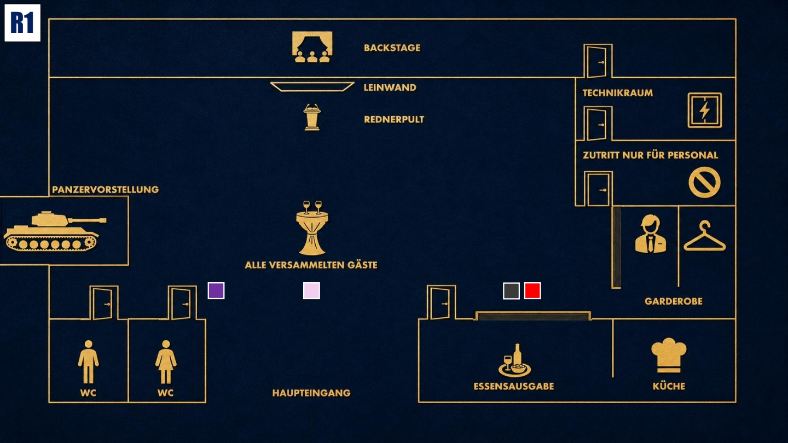

Beobachten & Testen
Lerne die anderen kennen. Finde heraus, wer etwas verbirgt, ohne selbst zu viel preiszugeben.

Das Ziel der ersten Runde
Gewinne Jakes Vertrauen und sorge dafür, dass er seine neue Position bei Stahlmann & Faust nicht hinterfragt. Wenn Zweifel aufkommen, lenke die Aufmerksamkeit ruhig auf den Blackout, die technischen Probleme oder Eric.
Deine Geheimnisse
1. Die Hochstapelei: Du bist eine Hochstaplerin mit perfekter Fassade. Du hast dein Studium nie abgeschlossen, deine Lizenzen sind gefälscht und deine gesamte Karriere basiert auf gefälschten Urkunden.
2. Die gezielte Platzierung: Du hast Jake nicht aus rein gut gemeinten Gründen zu Stahlmann & Faust geraten. Du hast ihn dorthin gedrängt, weil eine einflussreiche Person es von dir wollte.
Deine Mission
1. Jake beruhigen: Jake darf nicht misstrauisch werden. Sprich ihn aktiv auf seinen neuen Job an und bestärke ihn darin, dass diese Position ein wichtiger Karriereschritt für ihn war. Falls er Zweifel zeigt, erkläre ruhig, dass du nur das Beste für seine Zukunft wolltest.
2. Eric als Ablenkung nutzen: Eric war für Organisation und Technik verantwortlich. Stelle ihm gezielte Fragen zum Blackout und sorge dafür, dass die anderen seine Rolle genauer betrachten, ohne selbst zu auffällig Druck aufzubauen.
Deine Erinnerung an 18:00 Uhr

Zum Vergrößern tippen
Du gehst auf die Toilette. Dabei siehst du Luisa im Publikum sowie Jake und Zoe an der Essensausgabe.
Mögliche Fragen
An Jake: „Dass so ein Abend gleich zu Beginn deiner Karriere bei Stahlmann & Faust passiert, hätte ich nicht ahnen können. Aber abgesehen davon: Wie fühlst du dich in deiner neuen Position?“
An Eric: „Eric, du warst heute für Organisation und Technik verantwortlich. Wie erklärst du dir diesen Blackout? Das wirkt schon sehr eigenartig.“